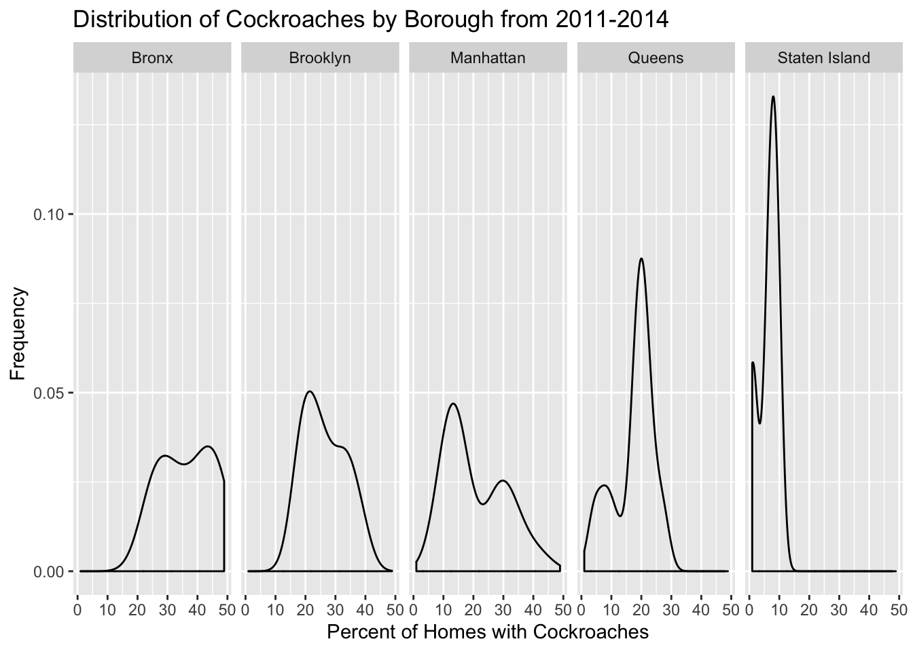

Asthma is one of the most common chronic illnesses for young children living in NYC according to the NY State Department of Health. Ranging from mild to severe, asthma affects children’s ability to breathe, exercise, and sleep and can severely affect children well into adulthood.
In NYC, there are many prominent risk factors for childhood asthma including air pollution, dust mites, mice, cockroaches, and pets. Given the large presence of cockroaches in NYC, children living in high-cockroach dense neighborhoods are more likely to develop asthma than children living in lower-cockroach dense neighborhoods.
Through these analyses we hope to identify and analyze risk factors for childhood asthma to map where these risk factors may have the largest impact. The current literature focuses on IgE exposure, air pollution, and the effect of impoverished neighborhoods on childhood asthma rates and childhood schooling rates.
We built our dataset using the NYC Gov Environmental & Health Data Portal. The map was built with the UHF code key from NYC Health. The asthma CSV file we used is linked (here)[asthma_data.csv]. We selected all variables relating to asthma, cockroaches, and poverty through string detection.
Our github repository is linked here
## ── Attaching packages ─────────────────────────────────────────────────── tidyverse 1.2.1 ──## ✔ ggplot2 3.2.1 ✔ purrr 0.3.2
## ✔ tibble 2.1.3 ✔ dplyr 0.8.3
## ✔ tidyr 1.0.0 ✔ stringr 1.4.0
## ✔ readr 1.3.1 ✔ forcats 0.4.0## ── Conflicts ────────────────────────────────────────────────────── tidyverse_conflicts() ──
## ✖ dplyr::filter() masks stats::filter()
## ✖ dplyr::lag() masks stats::lag()## Loading required package: xts## Loading required package: zoo##
## Attaching package: 'zoo'## The following objects are masked from 'package:base':
##
## as.Date, as.Date.numeric## Registered S3 method overwritten by 'xts':
## method from
## as.zoo.xts zoo##
## Attaching package: 'xts'## The following objects are masked from 'package:dplyr':
##
## first, last##
## Attaching package: 'PerformanceAnalytics'## The following object is masked from 'package:graphics':
##
## legend## Linking to GEOS 3.7.2, GDAL 2.4.2, PROJ 5.2.0## This version of Shiny is designed to work with 'htmlwidgets' >= 1.5.
## Please upgrade via install.packages('htmlwidgets').## Parsed with column specification:
## cols(
## geo_type_name = col_character(),
## geo_join_id = col_double(),
## time_period = col_double(),
## geo_place_name = col_character(),
## homes_with_cockroaches = col_double(),
## poverty = col_double(),
## public_school_children_5_14_yrs_old_with_asthma = col_double(),
## public_school_children_5_14_yrs_old_with_persistent_asthma = col_double(),
## asthma_hospitalizations_children_5_to_17_yrs_old = col_double()
## )## # A tibble: 188 x 9
## geo_type_name geo_join_id time_period geo_place_name homes_with_cock…
## <chr> <dbl> <dbl> <chr> <dbl>
## 1 Borough 1 2011 Bronx 37.7
## 2 Borough 2 2011 Brooklyn 26.6
## 3 Borough 3 2011 Manhattan 20.6
## 4 Borough 4 2011 Queens 19.7
## 5 Borough 5 2011 Staten Island 5.2
## 6 Borough 1 2014 Bronx 35
## 7 Borough 2 2014 Brooklyn 26.4
## 8 Borough 3 2014 Manhattan 19.7
## 9 Borough 4 2014 Queens 19.3
## 10 Borough 5 2014 Staten Island 4.8
## # … with 178 more rows, and 4 more variables: poverty <dbl>,
## # public_school_children_5_14_yrs_old_with_asthma <dbl>,
## # public_school_children_5_14_yrs_old_with_persistent_asthma <dbl>,
## # asthma_hospitalizations_children_5_to_17_yrs_old <dbl>## Warning: Removed 84 rows containing non-finite values (stat_density).